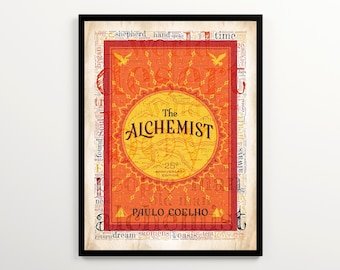

Library › Psychology & People
The Alchemist — Summary & Key Lessons

The fable of following your Personal Legend — 65 million readers' favorite story about listening to your heart.
📖 OPEN THE FULL INTERACTIVE BREAKDOWN →🌐 Read it in Hindi, Hinglish, Gujarati, Tamil & 22 more languages — free, with audio.
💡 The Big Idea
Santiago, an Andalusian shepherd boy, dreams twice of treasure at the Egyptian pyramids and sets off to find it — through robbery, love, war, and the desert. Coelho's fable encodes a philosophy: everyone has a Personal Legend (the path you always knew was yours as a child), the world speaks in omens to those who watch, fear of failure is the only real obstacle, and the treasure you cross the world for is usually buried where you started — but you could never have recognized it without the journey. It's the most-translated book by any living author for a reason: it gives permission to want your own life.
🧠 The 6 Key Lessons
Lesson 1: The Personal Legend — and Why We Abandon It
Part 1: The Old King's Teaching
Melchizedek, the old king, explains: everyone knows their Personal Legend in childhood — the thing they most want to do and be — but a 'mysterious force' gradually convinces them it's impossible: parental expectations, security, love used as a leash, and the world's great lie that our lives are controlled by fate. Most people bury the Legend under 'realism' and then defend the burial. The universe's conspiracies (beginner's luck, omens, helpful strangers) only activate for those actually walking the path. The Legend doesn't expire — the baker still dreams of traveling at sixty — but the price of postponement compounds.
📖 Example: The crystal merchant, the book's great tragic figure: for decades he dreamed of the pilgrimage to Mecca that his faith asks of him — and deliberately never went, because the dream of Mecca was what kept him alive; realizing it, he feared, would leave him… Read the full example →
⚡ Do this: Write down what you wanted at ten years old, before practicality edited you. Underneath, list the 'mysterious forces' that talked you out of it. Decide — honestly — whether they were protecting you or just early.
Lesson 2: Read the Omens
Throughout: The Language of the World
The universe communicates with travelers on their path through omens — patterns, coincidences, gut signals, recurring encounters. Coelho isn't peddling magic so much as attention: people on purpose notice doors that the distracted walk past; intuition is data processed below consciousness. Santiago learns to treat everything as potentially instructive: the flight of hawks warns of an attack; the stones Urim and Thummim answer only when the question is honest; beginner's luck exists 'because the universe wants you to know it's possible.' The skill is a posture: expect the world to be speaking, and it becomes remarkable how often it is.
📖 Example: Santiago sells his flock and is immediately robbed of everything in Tangier — apparently the omens failed. But the disaster forces him into the crystal merchant's shop, where he learns commerce, patience, and Arabic: the exact toolkit his desert crossing… Read the full example →
⚡ Do this: Keep an omen journal for two weeks: each day, record one coincidence, pull, or repeated signal — and what it might be pointing toward. Review at the end; act on the strongest pattern.
Lesson 3: The Danger of the Comfortable Middle
Part 2: The Oasis
Halfway through the desert, Santiago reaches the oasis Al-Fayoum — safety, respect, work, and Fatima, the love of his life. Every reason to stop is present, and stopping would be applauded. This is the fable's sharpest trap: not failure, but premature success — the good life that arrives before the Legend is complete. Fatima herself, a woman of the desert, refuses to be the reason he stays: love that halts your Personal Legend, the book insists, isn't love but possession; the real thing says 'go — and I'll be here.' The oasis is where most journeys actually end: not in defeat, but in comfort.
📖 Example: The alchemist's warning to Santiago: stay, and you'll marry Fatima, prosper, be happy for a year, maybe two — and then the unfinished Legend will begin to poison everything; the omens will keep appearing, and he'll spend his old age wondering. 'You'll walk… Read the full example →
⚡ Do this: Name your current oasis: the comfortable role, city, or routine that arrived mid-journey. Ask the alchemist's question: will I still be at peace with staying in five years — or quietly poisoned? Answer in writing.
Lesson 4: Fear Is the Only Real Obstacle
Part 2: The Desert Crossing
Every external obstacle in the book — robbers, war, the desert — is survivable; the only fatal force is internal. 'Tell your heart that the fear of suffering is worse than the suffering itself.' Santiago's heart itself turns traitor in the desert, whispering about safety and what he stands to lose; the alchemist's counsel is not to silence it but to LISTEN until it becomes an ally — a heart heard out will eventually reveal its dreams beneath its fears. And the fear of failure has one more distortion: the closer you get to the Legend, the harder the testing becomes — most people quit when the treasure is nearest, mistaking the final test for a verdict.
📖 Example: At the climax, Santiago — beaten by soldiers within sight of the pyramids — digs where his dream indicated and finds nothing. The leader of the men who beat him scoffs: he too once dreamed of treasure, twice, buried under a sycamore in a ruined Spanish… Read the full example →
⚡ Do this: Locate where you're 'two feet from gold': the project you're tempted to abandon precisely because the testing intensified. Commit to thirty more days of digging before any verdict.
Lesson 5: The Treasure Was at Home — But the Journey Made It Visible
Epilogue
The treasure is buried under the sycamore in the abandoned church where Santiago first dreamed — he crossed two continents to be told to go home. But the fable's point is the opposite of 'stay home': at home, the treasure was invisible and would have remained so. The journey — the merchant's shop, the Englishman's books, the desert, love, the alchemist, becoming the wind — built the person capable of finding it. Purpose behaves this way generally: what you seek is often in your own backyard, your own gifts, your own history, but only the returning traveler can see it. And the universe pays for completed Legends: Fatima waits, the recurring dream stops recurring, and the wind carries a kiss.
📖 Example: Coelho's own frame story mirrors the fable: he wrote The Alchemist in two weeks, it sold ~900 copies and was dropped by its first publisher — a failure. He persisted with his own Personal Legend, found a new publisher, and the 'failed' book became the… Read the full example →
⚡ Do this: Inventory your backyard: list three assets you've dismissed because they're familiar — a skill, a relationship, a hometown advantage, an old project. Ask what a stranger would pay for each. Pursue the biggest answer.
Lesson 6: The Language of the World: Reading the Omens of Your Path
Part 2: The Journey
As Santiago travels, he learns that the universe speaks a 'language of the world' — a subtle system of signs, coincidences and intuitions that guides a person who is truly pursuing their Personal Legend. The lesson is not superstition but attention: when you are aligned with your purpose, opportunities and people appear that the distracted mind would miss. Coelho's practical philosophy: the omens are always there, but they are only visible to someone who is moving. The person who stops or drifts loses the signal. The discipline is to keep walking — and to treat every coincidence as a message worth examining.
📖 Example: Santiago meets the Englishman, the crystal merchant and the alchemist precisely when he needs each one — not by luck, but because his committed journey kept him in the flow of encounters. The boy who stayed home would never have seen the signs. Read the full example →
⚡ Do this: This week, keep a small 'omens log': note three coincidences or unexpected encounters that could be pointing you somewhere. Then act on one of them, even if it's a small step.
✅ 5-Step Action Plan
- Recover your ten-year-old's dream in writing; audit what buried it.
- Keep the two-week omen journal; act on the strongest signal.
- Name your oasis and answer the five-year question honestly.
- Give your nearest-to-quitting project thirty more days of digging.
- Mine your backyard: three familiar assets, revalued by a stranger's eyes.
⚠️ When This Doesn't Work
Coelho's 'follow your personal legend and the universe will conspire' is beautiful — and Zano is its graveyard: a drone company whose founders followed their legend with total conviction, raised £2.3 million from 15,000 believers, and then discovered the universe conspires against unproven hardware. The universe conspires with people who validate, prototype and test; it spectates on everyone else. Follow the legend, but pack a business plan.
💀 The Graveyard Proves It
🚁 Zano Drone — Europe's Biggest Kickstarter: 15,000 Drones That Couldn't Fly. Burn: £2.3M from 12,000 backers. Read the full case study →
💬 Best Quotes from The Alchemist
- “When you want something, all the universe conspires in helping you to achieve it.”
- “There is only one thing that makes a dream impossible to achieve: the fear of failure.”
- “The secret of life is to fall seven times and to get up eight times.”
Interactive version: mark lessons as read, listen in your language, share quote cards.